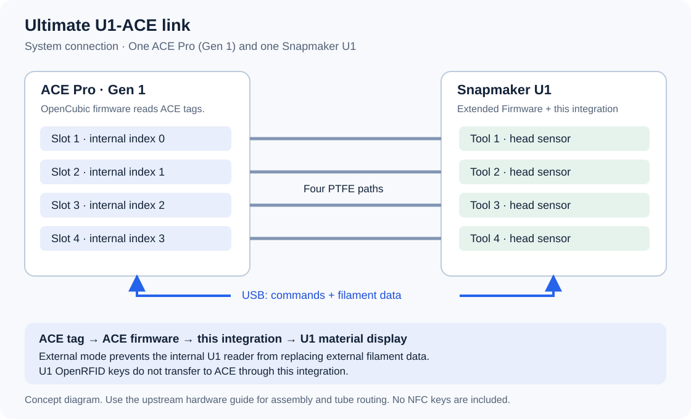
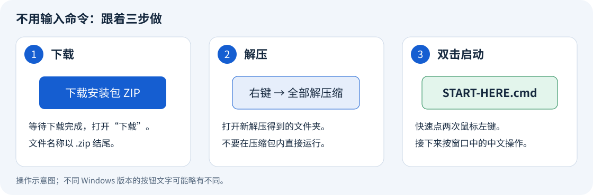
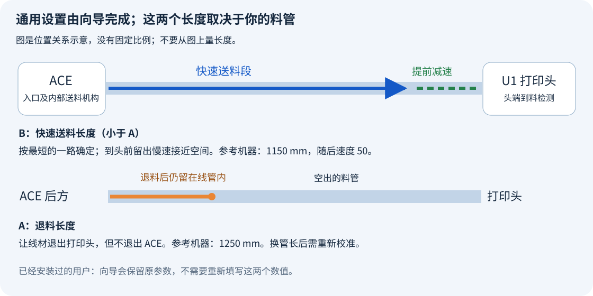
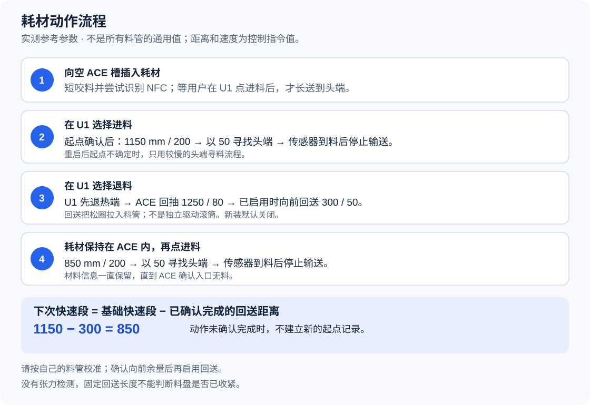

安装不需要编程。
双击 START-HERE.cmd，选择中文或 English。向导可从准备 U1 固件开始；这里是离线说明，不是安装按钮。
由用户提出需求和完成实机测试，使用 OpenAI Codex 开发代码、工具及文档。使用者无需安装 Codex。
External 已自动处理。向导会设置耗材来源、处理内置读卡服务，并保存备份。受支持标签无需自行寻找或填写 NFC 密钥。
机器还没准备好？从这里展开固件、访问开关、网络、线缆和 ACE 代际；已完成的人可以跳过。
安装前准备
这一页帮你确认型号、屏幕设置、网络和接线。全部确认后，回到快速开始运行向导。
U1 和 ACE 的固件都由向导准备，不用提前自己刷。
一、确认设备
| 项目 | 要求 |
|---|---|
| 打印机 | Snapmaker U1。 |
| 送料盒 | ACE Pro 第一代。看机身铭牌、包装或购买记录，不要只凭“四个料槽”判断。 |
| 电脑 | Windows 电脑，能上网、下载和解压文件。 |
| 连接线 | 经过核对的 ACE 第一代专用 USB 连接线，见第五节。 |
| 料管 | 四路料管连接明确，没有压扁或急弯。 |
ACE 2 Pro 不在支持范围内。 OpenCubic 发布页同时有 ACE 1 Pro 和 ACE 2 Pro 的固件，两者不能混用。
- 第一次安装： 先在 U1 上正常退料，再把四路耗材拔出 ACE 入口。退料会加热喷嘴，之后重新等待冷却。
- 只是更新本项目： 不用清空四路，但仍要空闲、关闭烘干并冷却。
二、查看 U1 固件版本
- 在 U1 屏幕打开 设置 → 关于 → 固件版本。
- 记下显示的版本。
本项目要求扩展固件 v2.0.0-paxx12-24。屏幕只显示 2.0.0 时不能确定，要在第四节的配置网页里确认。
| 现在的情况 | 下一步 |
|---|---|
已确认是 v2.0.0-paxx12-24 | 跳到第三节。 |
| 还没装，或不确定 | 运行向导选菜单 2，由它下载、校验并准备 U 盘，见 U1 固件准备。 |
| 其他扩展版本或自己改过的系统 | 先备份原配置并核对兼容性，不要直接覆盖。 |
U1 有自定义改动时，升级固件前先自己备份。本项目不备份整台 U1 的系统，安装时的备份也不保护升级之前的改动。
想手动下载和校验固件，同样见 U1 固件准备。
屏幕入口参考 Snapmaker 官方更新说明，升级报错参考官方升级故障说明。
三、打开两个访问开关
1. Advanced Mode
- 在 U1 屏幕打开 设置 → 维护。
- 开启 Advanced Mode，按要求重启。
回到维护页面时它仍为开启，才算完成。见上游配置说明。
2. Root Access
- 打开 设置 → 维护 → Root Access。
- 阅读说明，滚到底部点 Agree／同意。
- 把状态设为 Open。
页面显示 Open 才算完成。向导靠它通过 SSH 连接打印机，见上游 SSH 说明。
四、网络和登录
1. 找到打印机地址
- 在 U1 屏幕打开 设置 → Wi-Fi，确认已连接。
- 记下页面上的 IP 地址。
固件升级后可能要重新连 Wi-Fi，地址也可能变，以屏幕当前显示为准。
没有地址时先连上自己的 Wi-Fi，见 Snapmaker 官方连接检查。
2. 电脑连同一个网络
电脑和打印机要接在同一个路由器下，电脑用网线也可以。不要一个连手机热点、一个连家里的网络。
3. 打开配置网页
- 在电脑上打开 Edge 或 Chrome，点一下顶部地址栏。
- 输入
http://，紧接打印机地址，再接/firmware-config/，按回车。
能打开 Firmware Config 页面，并且构建版本是 2.0.0-paxx12-24，才算完成。见页面说明。
打不开时依次检查：IP 是否变了、Wi-Fi 是否连着、Advanced Mode 是否开启。
4. 准备 SSH 密码
- 向导要的是 SSH 密码，不是 Wi-Fi 密码，也不是 Snapmaker 账号密码。
- 没改过的话，用户名是
root，初始密码是snapmaker。见上游凭据说明。 - 输入时不显示字符是正常的。不要把密码贴到公开页面。
五、接线
软件不能代替正确的线缆。 接口能插进去，不代表电气连接正确。
- 按 SnapAce 的 Pinout and Wiring 硬件说明制作或购买 ACE Pro 第一代连接 U1 USB 的专用线。
- 不要按线的颜色猜线序，普通充电线不能代替。
- 不会看接线图或做接头时，用确认过的成品线，或请有经验的人完成。不要先通电“试试”。
- 只参考 SnapAce 的硬件部分。 不要执行旧 SnapAce 的软件覆盖步骤。
线准备好以后：
- 等喷嘴和热床冷却，关闭 U1 和 ACE 的电源。
- 接上专用 USB 线。
- 把 ACE 的四路出料管接到对应的 U1 通道，核对 1、2、3、4 路没有交叉。
- 整理料管，避免压扁、急弯或妨碍打印头移动。
- 重新开机。

这张图只说明连接关系，不提供线序或尺寸。
之后向导如果提示找不到 ACE 或找到多个设备，先检查连接，不要随便选一个串口。
六、ACE 固件
U1 固件和 ACE 固件是两回事，升级 U1 不会更新 ACE。不用提前自己刷 ACE，向导会在安装前检查并准备。
| 项目 | 要求 |
|---|---|
| 硬件 | ACE Pro 第一代 |
| 运行版本 | CV1.3.863 |
| 对应固件 | OpenCubic Gen1 CFW 1.1.1，文件 ACE_V1.3.863_20260716.bin |
| 上游位置 | OpenCubic `v1.0.2` 发布页 |
- 向导只支持从
V1.3.856、引导V1.0.1升级。其他版本会被拒绝，不会强刷。 V1.3.863不等于CV1.3.863，铭牌也不能代替版本检查。- 发布页的
v1.0.2是发布包的标签，不是固件版本。不要下载同页的ACE2_...文件。 - 已经有人替你刷好时，向对方确认固件来源和版本对应上表，就不用重刷。
步骤见 ACE 固件向导，想逐条执行命令见手动维护说明（英文）。
支持的标签不需要 NFC 密钥，范围见 NFC 说明。
七、最后确认
| 检查项 | 通过标准 |
|---|---|
| 固件 | 配置网页确认 2.0.0-paxx12-24，或准备用向导菜单 2 安装。 |
| 访问开关 | Advanced Mode 开启，Root Access 为 Open。 |
| 网络和登录 | 电脑能打开配置网页，已记下打印机地址和 SSH 密码。 |
| ACE | 确认是第一代。固件留给向导检查。 |
| 接线 | 专用线和四路料管已核对。 |
| 管路长度 | 第一次安装已按参数与校准测量；已有安装保留原值。 |
| 状态 | 没有打印、进退料或烘干。第一次安装时四个打印头和四个 ACE 入口都没有耗材。 |
| 温度 | 喷嘴和热床目标温度为零，实际低于 50℃。 |
管路长度软件测不出来，不要照抄示例里的 1250 mm。
都通过后，回到快速开始运行向导。
快速开始
用一台 Windows 10 或 11 电脑，跟着向导走完即可，不需要会编程。
1. 准备设备
- 等打印和进退料全部结束，关闭加热和 ACE 烘干，等喷嘴和热床低于 50℃。
- 第一次安装：先在 U1 上正常退料，再把四路耗材拔出 ACE 入口。只是更新则不用清空。
- 确认是 ACE Pro 第一代，不是 ACE 2 Pro。
- 关闭两台设备的电源，按 SnapAce 硬件指南接好专用 USB 线和四路料管，再开机。普通充电线不能代替。
- 让电脑和 U1 连同一个网络，两者都要能上网。
U1 有自己改过的配置时，先另存备份；本项目的备份不保护固件升级前的改动。
型号、接线、屏幕操作不熟悉，先看安装前准备。
2. 下载、解压、启动
- 下载安装包。
- 在“下载”文件夹里右键这个压缩文件，点 全部解压缩。
- 打开解压出的
Ultimate-U1-ACE-link文件夹，双击 START-HERE.cmd。 - 输入 1 选中文，按回车。

不要在压缩包预览窗口里直接运行。.html 文件是离线说明，不是安装程序。
3. 选择菜单
| 菜单 | 什么时候选 |
|---|---|
| 1. U1 已准备好 | U1 已是 2.0.0-paxx12-24，Advanced Mode 开启，Root Access 为 Open。向导检查 ACE 固件后安装。 |
| 2. 准备 U1 固件 U 盘 | U1 还没装指定固件。需要一个已是 FAT32、空闲 300 MB 以上的 U 盘，向导不会格式化它。 |
| 3. 手动安装 | 想自己逐条执行命令。只打开说明，不连接打印机。 |
| 4. ACE 固件 | 只维护 ACE，或查看上次 ACE 更新结果。不安装 U1 适配。 |
选菜单 2 时，屏幕上的每一步见 U1 固件准备。升级后打印机地址可能变化。
U1 上是其他版本或自改固件时，先单独核对兼容性，不要为了通过检查而覆盖。
4. 填写连接信息
| 窗口提示 | 输入什么 |
|---|---|
| 打印机地址 | U1 的 Wi-Fi 页面显示的 IP，只填数字地址。 |
| 首次 SSH 连接 | 对照屏幕核对地址后确认，见首次连接说明。 |
password: | 打印机的 SSH root 密码，不是 Wi-Fi 密码。输入时不显示字符是正常的。 |
没改过的话，用户名是 root，初始密码是 snapmaker，见上游 SSH 说明。
向导不保存密码，可能会问多次。
5. ACE 固件
第一次安装会自动进入这一步。
- 选自动检查。
- 等向导下载并校验固件，核对 ACE 的型号、当前版本和空闲状态。
- 核对窗口显示的源版本和目标版本，再确认更新。
- 出结果之前，不要断电，不要拔 USB。
只支持从 V1.3.856／引导 V1.0.1 升级到 OpenCubic CFW 1.1.1（显示 CV1.3.863）。
其他版本向导会停下，不要强行继续。详见 ACE 固件向导。
6. 核对管路长度，再安装
第一次安装会问两个长度，已有安装保留原值。

| 字母 | 含义 |
|---|---|
| A | 退料时 ACE 回抽的距离。退完后耗材尖端要留在 ACE 后方的料管里。 |
| B | 进料时快速送料的距离。要在到达打印头之前结束，并且小于 A。 |
- 按参数与校准测量自己的管路，选出 A 和 B。
- 核对窗口列出的设置，确认安装。
已测机器用的是 A = 1250 mm、B = 1150 mm，仅供对照。
安装器会备份要改的文件，并自动把 Filament Detection 设为 External。
7. 成功后逐槽测试
等窗口明确提示本项目安装成功。只提示 ACE 固件成功不算。
- 向一个空的 ACE 入口插入耗材，手离开滚筒，等它咬料并读完 NFC。
- 确认它没有自己一路送到打印头，材料信息正确。没识别的可手动填写。
- 在 U1 上点 进料，等完成。
- 点 退料，确认耗材留在 ACE 里，材料信息还在。
- 不拔耗材，再点一次 进料。
- 这一槽通过后，其余三槽一次测一槽。
卡料、打滑或报错时立即停止。日常操作见日常使用。
某一步停住时怎么办
| 情况 | 怎么处理 |
|---|---|
| 提示缺少 OpenSSH 客户端 | 按下面的步骤添加，不需要装 Python。 |
| 连接或上传失败，还没开始安装 | 核对当前 IP、同一网络、Root Access 和 SSH 密码。 |
| 提示机器热、忙或在烘干 | 结束动作，关闭加热和烘干，等低于 50℃。 |
| 找不到唯一的 ACE 接口 | 检查电源和专用线，只连一台 ACE。不要猜串口。 |
| U1 屏幕升级报错 | 停下并记下原文，见 U1 固件准备。 |
| ACE 更新没出结果或电脑断线 | 保持供电和 USB。用同一版本安装包重开向导，选菜单 4 查看结果。不要重发更新。 |
| 适配安装可能已开始但没提示成功 | 保留窗口，不要重装，按更新与回退核对。 |
Automatic rollback VERIFIED 指 U1 上的文件已回退，不表示 ACE 固件已回退。
其他问题见故障排查。
Windows 提示缺少 OpenSSH 客户端
- 点 开始，搜索并打开 可选功能。
- 点 查看功能 或 添加功能。
- 搜索 OpenSSH，选 OpenSSH 客户端 并安装。不要选 OpenSSH 服务器。
- 重新运行 START-HERE.cmd。
关于本项目
用户提出需求并完成实机测试，OpenAI Codex 编写代码、安装器和文档。安装和使用不需要 Codex。
上游来源与许可见 THIRD_PARTY.md。
U1 固件与访问设置
准备 U1 固件
向导会下载准确的 U1 扩展固件（上游原版文件），校验后复制到 U 盘。然后你在 U1 屏幕上完成更新，并打开 Advanced Mode 和 Root Access。
这一步不刷写 ACE。ACE 固件步骤在同一个向导里随后进行。
准备什么
- 能联网的 Windows 10 或 Windows 11 电脑，以及已完整解压的本项目安装包。
- 一个已经是 FAT32 格式的可移动 U 盘，至少空闲 300 MB。向导不格式化磁盘。
- 空闲并已冷却的 U1：打印和全部耗材动作已结束，加热和 ACE 烘干已关闭，喷嘴和热床低于 50℃。
- 第一次安装时：用正常退料操作退出四个打印头里的耗材，取出四个 ACE 入口的耗材，然后再次等待加热器冷却。只是更新本项目时，不要求清空入口。
- 已有自定义配置时，在固件更新前自己保存一份备份。本项目稍后的安装备份保护不了它。
U1 已经是准确的支持版本时，改选菜单 1. U1 已准备好。有其他自定义固件或较新版本时，不要为了通过安装检查就直接覆盖。
向导步骤
- 完整解压项目压缩包。双击 START-HERE.cmd，选择语言，再选择 2. 准备 U1 固件 U 盘。
- 把 FAT32 U 盘插入电脑。在列表中选择它，核对盘符、名称和容量，然后确认。
- 等待下载、SHA-256 校验、复制和复制后校验全部完成，然后在 Windows 中弹出 U 盘。
- 把 U 盘插入 U1。在 U1 屏幕点 设置 → 关于 → 固件版本 → 本地更新。
- 选择
U1_extended_2.0.0-paxx12-24_upgrade.bin，确认更新。等待更新完成并重启，期间保持供电。 - 点 设置 → 维护 → Advanced Mode，开启并按要求完成重启。
- 点 设置 → 维护 → Root Access，阅读提示，向下滚动点 Agree / 同意，设为 Open。
- 检查 Wi-Fi，必要时重连，记下现在显示的打印机 IP 地址。
- 回到电脑上的同一个向导继续。它会询问打印机地址和 SSH 密码。
向导不会覆盖名称相同但内容不同的文件。先自己检查该文件，再重试。找不到合适的盘时，换用 FAT32 可移动 U 盘。不要改程序强制选择其他磁盘。
U1 更新失败时，保存屏幕显示的报错原文，按 Snapmaker 固件更新故障说明处理。不要尝试随机固件文件。主机适配的回退不能撤销 U1 固件更新。
固件身份和校验值
| 项目 | 固定内容 |
|---|---|
| 上游版本 | v2.0.0-paxx12-24 |
| 文件名 | U1_extended_2.0.0-paxx12-24_upgrade.bin |
| 大小 | 253893376 字节 |
| SHA-256 | 42dcf59e06ef0f6fab20745883322f24ddd3c1a09da07449b356dd9dab943070 |
这个校验值用于识别上游文件，不是 Snapmaker 的签名。本项目压缩包不包含 U1 固件二进制，见第三方项目说明。
不想运行向导
自己从上游发布页下载同一个文件，使用前检查 SHA-256：
- 在文件资源管理器中，按住 Shift，右键刚下载的
.bin文件，点 复制文件地址／复制为路径。 - 按 Windows 键 + R，输入
powershell，按回车。 - 复制下面这一行到打开的窗口，按回车。出现
Paste the file path时，粘贴刚复制的路径，再按回车。
Get-FileHash -Algorithm SHA256 -LiteralPath ((Read-Host "Paste the file path").Trim('"'))
把完整的 Hash 值与上表的 SHA-256 比较，字母大小写不影响结果。两者不一致时，不要使用这个文件。从准确的上游地址重新下载。
把校验通过的文件复制到 FAT32 U 盘第一层，完成向导步骤的第 4–8 步，再进入 手动源码安装。
ACE 固件：跟着窗口更新和查询结果
ACE 固件向导
English · 新手入口 · 中文手动安装 · 手动刷机参考（英文）
Windows 向导在安装主机适配之前，先准备 ACE 固件。你不需要输入命令。
固件由 U1 下载，工具也在 U1 上运行，所以 U1 必须能联网访问 GitHub。这些 NFC 格式由 OpenCubic 提供，使用它们不需要 NFC 密钥。
固件文件
| 用途 | 固定文件 | SHA-256 |
|---|---|---|
| 目标：OpenCubic 第一代 CFW 1.1.1 | ACE_V1.3.863_20260716.bin，113720 字节，发布页 v1.0.2 | 95e0b6ddb1e77d624d127ac91d9b3e21caf58adc5e1598faf2be3feacf9b4048 |
| 原厂参考文件 | ACE_V1.3.863_20250518.bin，105652 字节，固定的社区托管文件 | 3f3676ba357749b3d0367922cb7f6b0dedc9b3d104c1c29e719ac3e563f5eb63 |
向导下载这些文件，检查大小、SHA-256 和固件格式，通过前不能开始写入。安装包本身不含固件二进制。
原厂文件只是参考，不是从你自己的 ACE 备份出来的固件。原厂回退还没有经过实机验证，向导不会自动执行回退。
支持的起始版本
| 实际检测结果 | 向导的处理 |
|---|---|
第一代，应用版本 V1.3.856，引导程序 V1.0.1 | 通过全部检查后，可以更新到指定目标。 |
已显示 CV1.3.863 | 不重复刷写；询问你是否已安装指定 OpenCubic 版本，且 NFC 正常。 |
| 其他源版本、引导版本、代际或无法确认身份 | 停止；不猜测、不修改检测结果、不强行启用写入。 |
CV1.3.863 这个字符串不能区分所有社区修改版。不知道之前刷了什么时，不要把“已有正确版本”的问题回答为已确认。
开始前
- 等打印和全部耗材动作结束，关闭加热和烘干。
- 第一次安装本项目时，退出四个 U1 打印头里的耗材，再取出四个 ACE 入口的耗材。只是更新时，不要求清空入口。
- 等打印机所有加热器降到 50℃ 以下。
- 连接硬件前关闭两台设备。接好已核对的第一代 ACE USB 连接线和四路料管，再开机。
- 需要时先完成 U1 固件准备。确认 Advanced Mode 已开启，Root Access 为 Open。
- 维护和重启期间，保持 ACE 电源和 USB 线连接，手离开滚筒。
跟窗口操作
- 完整解压项目压缩包。双击 START-HERE.cmd，选择中文或 English。按下表选择任务。
- 按提示输入打印机当前 IP 地址和 SSH root 密码，填写方法见连接信息说明。
- 如果存在上次 ACE 更新的记录，先查看结果，再做新的维护。
- 确认显示的准备条件，然后等待程序下载、校验并检查设备。
- 核对显示的源版本、引导版本和目标版本，并确认设备是 ACE Pro 第一代。
- 只有显示的组合正确时，才确认一次固件更新。保持供电，等待验证结果。
| 你的任务 | 主菜单怎么选 | ACE 完成之后 |
|---|---|---|
| U1 已准备好，要安装本项目 | 1. U1 已准备好 | 在同一窗口继续主机适配安装。 |
| 先准备 U1，再安装本项目 | 2. 准备 U1 固件 U 盘 | 完成 U1 屏幕步骤，再继续 ACE 与主机适配安装。 |
| 只维护 ACE，或查询上次 ACE 结果 | 4. ACE 固件 | 完成 ACE 维护；如还要安装主机适配，重新打开向导，选菜单 1。 |
菜单 3 打开所选语言的手动文档，然后退出。更新一旦开始，就在 U1 上继续运行，电脑的 SSH 断开也不影响。
怎样才算成功
更新必须得到完整成功结果，才能继续主机安装。如果原来已装好准确固件，走“已确认正确版本”的路径，不要再写入一次。
新的 NFC 解码可能改变品牌、材质或颜色，例如 Generic 变成 Bambu。进入主机安装前，把显示的变化和当前料盘对照。
主机安装完成后，对每个槽做一次有人看护的进料 → 退料 → 再进料检查，一次只测一槽。保留已校准的管长参数。
停止或断线后怎么办？
| 提示或情况 | 你该做什么 |
|---|---|
| 下载或校验失败 | 检查网络；失败文件不会进入刷写步骤。 |
| 机器正在加热、烘干、打印或使用 ACE | 正常结束对应动作，等待满足条件后再准备。 |
| ACE 版本或设备不受支持 | 保留原固件，保存显示的版本供兼容性核对。 |
已显示 CV1.3.863，但不知道固件来源 | 不把它确认成指定版本，保持固件不变。 |
| 上次更新仍在运行 | 保持供电，继续查询同一事务。 |
| 电脑断线 | 使用同一版本安装包重开向导查看上次结果，不重复刷写。 |
| 已开始更新，但结果无法确认 | 保持打印控制停止，保留私人记录，按显示的恢复信息处理。 |
结果无法确认的写入不算升级成功，即使已经发送过部分数据。程序不会自动刷原厂包、清空事务或恢复打印。
如果后台任务在尚未尝试写入固件之前停止，菜单 4 可以提供“仅检查并恢复”的操作。确认一次后等待。它不刷固件；只要曾经尝试写入，就不会提供。
其他情况可能需要手动维护和恢复（英文）。不要修改保存的记录（在打印机的 /userdata/ultimate-u1-ace-link/ace-firmware/ 目录下）来绕过拒绝条件。
ACE 固件成功不等于主机适配安装成功。后面的主机安装失败时，按主机更新和回退说明处理。Automatic rollback VERIFIED 只表示主机文件和服务已回退，不表示 ACE 固件已恢复。
还有未处理的固件事务时，新的主机安装和回退都会拒绝运行。不要同时运行旧安装器或独立的手动维护工具。
不要公开设备身份、密码、NFC 密钥或未脱敏的维护日志。
料管长度、退料及回送参数
参数与校准
进料和退料由三个长度控制。四个槽共用这三个长度和速度设置，所以四条管路都要检查。
长度单位是毫米 mm。速度是请求值，单位 mm/s，不是实测的线材速度。
| 记号 | 设置文件中的名称 | 作用 | 仅供对照的参考值 |
|---|---|---|---|
| A | retract_length | 主退料长度：U1 完成热端退料后，ACE 把线材拉回的距离。 | 1250 mm，速度 80 |
| B | fast_load_length | 进料的快速段。必须在喷头之前结束，留出慢速接近段。 | 1150 mm，速度 200 |
| C | forward_takeup_length | 消松回送：A 完成后再往 U1 方向送一段，把松出的线材吸入 PTFE 管。 | 初次设 0；已测参考为 300 mm，速度 50 |
设置文件
- 第一次安装：安装向导会让你填写 A 和 B，C 从 0 开始。
- 已经安装：再次运行向导不会应用新的 A／B／C。请按应用新参数操作。
config/settings.example.json是保守模板：C 为 0，保留已安装参数。config/settings.local.json是下文流程使用的个人工作文件。config/settings.tested-reference.json的 C 为 300，并要求替换已安装参数。不要拿它覆盖自己的配置。
| 名称 | 参考值 | 说明 |
|---|---|---|
serial | 你的 ACE USB 路径 | 保留导出的值。 |
auto_detect_serial | true | 要求只有一个匹配的 ACE。 |
baud | 115200 | 不要改。 |
feed_speed | 200 | 只用于手动 ACE_FEED。 |
feed_length | 1250 | 旧参数。不是 B。 不要改。 |
retract_speed | 80 | A 的速度。 |
forward_takeup_length | 初次用 0 | C。0 表示不执行。 |
forward_takeup_speed | 50 | C 的速度。 |
fast_load_speed | 200 | 快速段速度。 |
sensor_load_speed | 50 | 最后接近喷头的速度。 |
sensor_load_max_length | 2500 | 整次进料的故障上限，不是目标长度。不要用加大它来掩盖送料失败。 |
max_dryer_temperature | 55 | 烘干温度上限。保留原值。 |
calibrated_acknowledged | 模板为 false | 检查实际长度和速度后改为 true。它不会测量任何东西。 |
apply_existing_settings | 通常为 false | 要修改已安装参数时改为 true。 |
请通过安装器改参数，不要自己修改 ace.py。
安装器会拒绝超出下列限制的值。通过检查不代表这些值适合你的料管。
- C 为 0–500 mm，且小于 A 和 B。
- B 不大于 A，并小于 2500 mm 的进料上限。
- 快速段速度不超过 200，慢速段和消松回送速度不超过 50。
A、B、C 如何一起工作
把线材插入 ACE，只会触发短距离咬料和 NFC 读取。在 U1 上选择“进料”后，才会长距离送料。
有可靠的起始位置记录时，程序这样计算：
本次快速段 = max(0, B − 已记录的回送量)
本次慢速段最大余量 = 2500 − 本次快速段
- 两段中任何时候，喷头传感器都可以提前停止送料。慢速段速度为 50，余量是上限，不是目标。
- B = 1150、C = 300 并成功退料后，快速段为 850 mm。程序会自己减去已记录的 C。C = 300 时，不要把 B 填成 850 来抵消。 那样快速段会变成 550 mm。
- 重启、动作中断或位置不确定后，不使用快速段。这时第一次进料较慢是正常的。

退料：U1 释放热端，ACE 按速度 80 回抽 A，C 启用时再按速度 50 送 C，并记录 C 供下一次进料使用。
退料后，线材必须仍留在 ACE 入口和后方 PTFE 管内，U1 喷头传感器必须为空。
校准 PTFE 管路
测量四条管路
- 结束打印和所有进退料动作，等打印机冷却。拆管或拔接硬件前先断电。
- 给每根管的两端标上 ACE 槽号和 U1 喷头号。
- 沿安装后的弯曲路线量每根管，不要量直线距离。量不到的部分记为“未知”，不要当成 0。
- 选定退料后尖端的停留点：靠近 ACE 一侧的 PTFE 管内。尖端不能到达喷头，也不能退出 ACE 入口。
- 把所有料管重新接牢，再做通电测试。
- 软尺量不到 ACE 内部路径、初始咬入量、喷头内部路径和热端退料动作。测量只用来判断余量。
- 按到喷头的最短路径检查 B。参考值 A 和 B 相差 100 mm。这不代表你的机器也有 100 mm 的余量。
- 如果四条路径找不到安全的共用参数，先调整管路布局。
选择并测试 A 和 B
- 这套管路已有正常工作的记录时，从记录的参数开始。先查清未知的尺寸，再填长回抽值。向导可以中途退出，不安装。
- 把 C 设为
0。保持快速段速度200、接近速度50、退料速度80。 - B 选得短一些，保证到喷头前还有慢速接近段。A 要让尖端退回到停留点。
- 在向导里填写 A 和 B（首次安装），或按应用新参数操作。
- 在一个槽上，在 U1 依次点进料、退料、再进料。每个动作完成后再点下一个。
- 运动停止后，检查尖端位置、喷头传感器、ACE 入口和松出的线材。滚筒转动时手不要靠近。拆管前先断电。
- 用同一组参数在另外三个槽上重复，然后才正常打印。结果记在验收清单里。
调整
- 还在快速段，线材就到了喷头：减小 B。传感器能停下，不代表余量足够。
- 退料后尖端太靠近 U1 一侧，喷头为空，没有报错：在 ACE 一侧余量内小幅增加 A。保持 C = 0 重测。
- 尖端退出 ACE 入口：先恢复正确的物理状态，再减小 A。不要重复点“退料”来补救。
- 退料失败、喷头仍检测到线材、打滑或卡住：停止。检查热端释放和管路。不要盲目加大 A。
- 每次只改一个长度，幅度不超过你能确认的余量。换管或重新走管后，把 C 设为 0，重做本节。不要用旧参数去试新管是不是太短。
- 其他现象见故障排查。
启用消松回送
C 在 A 之后按设定长度往 U1 方向送一段。它没有张力传感器。
C = 0 时四个槽的进料、退料、再进料都通过后，才能启用 C。
- 观察退料后松出的线材。
- 按看到的松量和到喷头的余量，选一个有限的 C。已测的 C = 300（第 4 槽记录）不是给你的推荐值。
forward_takeup_speed保持不超过50。- 应用参数，测试一次正常退料。喷头必须仍为空，ACE 入口必须仍有料。
- 不拔出线材，再进料一次。
- 在四个槽上重复这些检查。
- C 越大，停留的尖端离喷头越近。线材过紧、卡住或到达喷头时，停止，减小 C 或设为 0。
- 仍有松圈时，先确认线材移动顺畅。不要为了抵消过大的 C 而加大 A。
应用新参数
本流程用于修改已经安装的参数。它先导出当前参数，所以串口路径和烘干温度上限会保留。
不要拿通用模板覆盖整份配置。
1. 准备打印机和项目文件夹
- 结束打印和所有进退料动作。完成安装前检查。
- 加热目标温度保持为 0，实际温度低于 50 °C。关闭 ACE 烘干和辅助送料。
- 打开支持当前已安装版本的项目解压文件夹，进入包含
installer.py和manifest.json的那层。 - 在资源管理器地址栏输入
powershell，按回车。所有命令都在这个窗口执行。任何命令报错就停下。
$ProjectDir = (Get-Location).Path
if (-not (Test-Path -LiteralPath .\installer.py)) { throw "Open the folder containing installer.py first." }
$PrinterAddress = Read-Host "Printer IP from the Wi-Fi page"
$PrinterTarget = "root@$PrinterAddress"
$RemoteDir = "/userdata/ultimate-u1-ace-tuning-" + (Get-Date -Format "yyyyMMdd-HHmmss")
Get-Command ssh, scp
$UploadDir = Join-Path ([IO.Path]::GetTempPath()) ("U1AceSettings-" + [guid]::NewGuid().ToString('N'))
$PublicFiles = @('installer.py', 'manifest.json', 'LICENSE', 'THIRD_PARTY.md', 'SOURCES.json',
'payload/ace.py', 'payload/filament_feed.py', 'payload/filament_detect.py', 'payload/extruder.py',
'tools/ace_usb/wizard_backend.py', 'tools/ace_usb/ace_iap.py', 'tools/ace_usb/protocol.py',
'tools/ace_usb/prepare_profile.py', 'tools/ace_usb/fetch_firmware.py',
'tools/ace_usb/images.json', 'tools/ace_usb/device-profile.json', 'config/settings.example.json')
foreach ($Name in $PublicFiles) {
$Destination = Join-Path $UploadDir $Name
New-Item -ItemType Directory -Force -Path (Split-Path $Destination -Parent) | Out-Null
Copy-Item -LiteralPath (Join-Path $ProjectDir $Name) -Destination $Destination -ErrorAction Stop
}
scp -O -r "$UploadDir" "${PrinterTarget}:$RemoteDir"
if ($LASTEXITCODE -ne 0) { throw "Upload failed. Stop here." }
输入打印机 IP，并在要求时输入 root 密码。输入密码时不显示字符。出现新的主机密钥提示时，按连接核对说明确认。
2. 导出当前参数
这次检查是只读的。它先给已有的本地工作文件保存一份带时间戳的副本，再用记事本打开导出的参数。
$PlanText = ssh $PrinterTarget "cd '$RemoteDir' && python3 installer.py check --settings config/settings.example.json"
if ($LASTEXITCODE -ne 0) { throw "Check failed. Stop here." }
$Plan = ($PlanText -join "`n") | ConvertFrom-Json
if ($Plan.compatible -ne $true -or $Plan.fresh_install -ne $false) { throw "This procedure requires a supported existing installation." }
if (Test-Path -LiteralPath .\config\settings.local.json) {
Copy-Item -LiteralPath .\config\settings.local.json -Destination (".\config\settings.local.before-" + (Get-Date -Format "yyyyMMdd-HHmmss") + ".json")
}
$Plan.effective_settings | ConvertTo-Json -Depth 8 | Set-Content -LiteralPath .\config\settings.local.json -Encoding UTF8
notepad .\config\settings.local.json
3. 修改三个长度
只改下面这些项目。这只是部分项目示例，不能用来替换完整文件。数值请填你的校准记录。
{
"retract_length": 1250,
"fast_load_length": 1150,
"forward_takeup_length": 0,
"apply_existing_settings": true,
"calibrated_acknowledged": true
}
- 把
retract_length改为你的 A，fast_load_length改为你的 B，forward_takeup_length改为你的 C。校准期间 C 用 0。 - 把
apply_existing_settings改为true。审查实际长度和速度后，把calibrated_acknowledged改为true。 - 其他项目全部保留，包括
feed_length和自定义的速度。数字用整数，不加引号和单位，true用小写。保存文件，关闭记事本。
4. 检查、应用、验证
上传改好的文件，并运行只读检查：
scp -O .\config\settings.local.json "${PrinterTarget}:$RemoteDir/config/settings.local.json"
if ($LASTEXITCODE -ne 0) { throw "Settings upload failed. Stop here." }
ssh $PrinterTarget "cd '$RemoteDir' && python3 installer.py check --settings config/settings.local.json"
if ($LASTEXITCODE -ne 0) { throw "Check failed. Do not install." }
在 effective_settings 里核对 A、B、C、速度、串口路径和烘干温度上限。
输出仍是旧值或报错时，不要安装。打印机空闲并冷却后，应用参数：
ssh $PrinterTarget "cd '$RemoteDir' && python3 installer.py install --settings config/settings.local.json"
if ($LASTEXITCODE -ne 0) { throw "Install failed. Read the rollback result and backup ID. Stop here." }
保存输出的备份 ID，然后再运行一次只读检查：
ssh $PrinterTarget "cd '$RemoteDir' && python3 installer.py check --settings config/settings.local.json"
if ($LASTEXITCODE -ne 0) { throw "Verification failed. Do not start a transport test." }
确认实际生效的值，然后重做四个槽的检查。
NFC 支持范围与识别流程
NFC 与耗材信息
标签由 ACE 读取和解码，解码能力来自 OpenCubic。
本项目向 ACE 查询结果，把品牌、材料类型、细分类型和颜色同步到 U1。
需要什么
| 项目 | 应当是什么 |
|---|---|
| 硬件 | Anycubic ACE Pro 第一代，已正确连接 U1。 |
| ACE 固件 | CV1.3.863，内含 OpenCubic CFW 1.1.1。 |
| 对应下载 | OpenCubic v1.0.2 发布页中的 ACE_V1.3.863_20260716.bin。 |
| U1 耗材读取方式 | External（外部）；当前安装器会自动设置。 |
| 料卷 | 带受支持的标签，且标签位置正确。 |
用 ACE 固件向导或手动指南的 ACE 步骤准备固件。
不要把 ACE 2 的固件镜像刷入第一代 ACE Pro。
支持的标签
“上游”一列以 OpenCubic v1.0.2 的支持文档为依据。
表中的“Anycubic 第一代／第二代”指标签格式，不是 ACE 硬件代数。
| 标签品牌或格式 | 上游详细文档的状态 | 本项目的实机验证 |
|---|---|---|
| Anycubic 第一代标签 | 已确认 | 本项目未实测。 |
| Anycubic 第二代标签 | 已确认 | 本项目未实测。 |
| Bambu Lab／拓竹 | 已确认 | 已实测品牌、耗材类型和耗材颜色的识别与同步。 |
| TigerTag | 已在第一代 ACE 上确认 | 本项目未实测。 |
| OpenSpool | 已在第一代 ACE 上确认 | 本项目未实测。 |
| Elegoo／智能派 | 已实现解析，尚未实测 | 本项目未实测。 |
| OpenPrintTag，包括 Prusa 格式 | 已实现解析，尚未实测 | 本项目未实测。 |
| QIDI／起迪 | 不支持；仅有占位实现 | 本项目未实测。 |
| Creality／创想三维 | 不支持；仅有占位实现 | 本项目未实测。 |
本项目自己只测过拓竹标签，不代表每种料卷、批次或标签位置都已验证。
QIDI、Creality 和没有标签的料卷，请在 U1 上手动填写材料信息。
识别流程
- 耗材 NFC 标签
- ACE 读取并解码
- U1 查询并转换结果
- 显示并保存耗材信息
多品牌解码来自 OpenCubic。U1 内置 OpenRFID 是另一条独立路径。
- ACE 的读卡器读取标签，ACE 固件完成解码。
- 运行在 U1 上的适配程序向 ACE 查询，取得该槽已解码的品牌、类型和颜色。
- 适配程序转换名称和颜色格式，再写入 U1。例如
Bambu Lab／PLA Matte变成Bambu／PLA／Matte。品牌为空时显示Generic。
U1 内置读卡器是另一套读卡器，本方案不使用。安装器会设置 External 并停止 U1 的 OpenRFID 服务。
检查 External 模式
- 打开打印机的
/firmware-config/页面。 - 找到 Snapmaker Components。
- 查看 Filament Detection，选中值必须是 External。保留的旧版 v0.1.0 安装包不会自动设置，需要手动选择 External。
检查识别结果
- 向一个空的 ACE 入口插入耗材，手远离滚筒。
- 等待短咬料和 NFC 识别结束。
- 在 U1 上打开该槽的耗材详情，对照料卷检查。
- 耗材停在 ACE 处等待。插入耗材不会自动送到打印头。
- 多个槽接连变化时，识别可能更久。识别期间不要反复点进料。
- 只要 ACE 入口仍有耗材，进料和退料都会保留材料信息。
- 确认入口为空后，该槽的信息才会清除。未知状态或断连状态不会清除。
识别失败时
| 看到什么 | 怎么办 |
|---|---|
| 料卷没有标签 | 在 U1 上手动填写材料信息。 |
| QIDI 或 Creality 料卷 | 手动填写材料信息；这些标签的解码尚未实现。 |
| 受支持的标签没有识别 | 检查 ACE 固件版本是否准确、是否确有原装标签、标签位置是否正确。 |
| 类型和颜色出现，但品牌显示 Generic | ACE 返回的品牌为空，需要时手动填写品牌。 |
| U1 显示 Bambu，切片软件不显示 | 单独检查切片软件的耗材预设。 |
本项目不包含 NFC 密钥。不要公开配置备份、凭据或未脱敏的日志。
日常进退料与远程操作
日常进料、退料与远程控制
你做什么，会发生什么
| 你做什么 | 会发生什么 |
|---|---|
| 把耗材插进空的 ACE 入口，手离开滚筒 | ACE 咬住耗材、读取 NFC 标签，然后停住等待，不会自动送到打印头。 |
| 在 U1 上检查材料详情 | 没有标签或读不出的料卷，请手动填写。 |
| 在 U1 上选择打印头，点正常的“进料” | ACE 先快速送料，再慢速送到打印头传感器检测到耗材为止，U1 完成热端上料。 |
| 对该打印头点正常的“退料” | U1 把耗材从热端退出，ACE 回抽，耗材头留在 ACE 及其后方料管内。 |
| 不拔出耗材，再次点进料 | 直接开始进料。只要 ACE 入口仍有耗材，材料信息就保留。 |
- 每个动作完成后再发下一个指令。
- 重启后或位置不确定时，可能全程使用较慢速度。
实测示例是以 80 mm/s 回抽 1250 mm，再以 50 mm/s 回送 300 mm。
这不是通用距离，见管路校准。
远程操作
远程屏幕。 开启 Firmware Config → Web → Remote Screen Access，再打开这台打印机的 /screen/ 页面，像在实体屏幕上一样点进料或退料。
安装器不会自动开启它。见 v24 远程屏幕说明。
网页控制台。 以第 1 槽为例，只发送下面一个指令，并按打印机提示操作。第 2、3、4 槽分别用 EXTRUDER=1、2、3。
进料：
AUTO_FEEDING EXTRUDER=0 LOAD=1
退料：
AUTO_FEEDING EXTRUDER=0 UNLOAD=1
- 不要同时发送进料和退料指令。
- 不要用
ACE_FEED或ACE_RETRACT代替。它们只移动耗材，不执行热端流程。 - 可选的 AFC 面板需要另外开启 AFC Stub 设置，本项目安装后默认不提供。
中断、失败与恢复
更新、断线查询与回退
本页命令在 Windows PowerShell 里运行，不需要以前的窗口还开着。
- ACE 固件维护和 U1 主机适配安装是两个独立的事务。
- 主机备份不能回退 ACE 或 U1 固件。
- 结果未知时：保持设备空闲，不打印，不重发安装或刷写命令。
1. 新开窗口并连接
- 点击“开始”，搜索并打开 Windows PowerShell。
- 准备 U1 屏幕当前的 IP 和记录的 RemoteDir。安装目录名含
stage，手动调参目录名含tuning。向导失败时会显示该目录，电脑私人日志里也记有Remote stage。 - 粘贴下面整块。先输入 IP 和 SSH 密码，再粘贴记录的完整目录。
- 首次连接的身份核对和隐藏密码输入，见确认连接。
不要猜目录。 找不到记录时，保留错误窗口、屏幕信息和文件。不要用一个只是看起来最新的目录执行写入。
$ErrorActionPreference = 'Stop'
Get-Command ssh.exe, scp.exe -CommandType Application | Out-Host
$PrinterAddress = (Read-Host '输入 U1 屏幕 Wi-Fi 页显示的 IPv4 地址').Trim()
if ($PrinterAddress -notmatch '^(?:[0-9]{1,3}\.){3}[0-9]{1,3}$' -or
@($PrinterAddress.Split('.') | Where-Object { [int]$_ -gt 255 }).Count -gt 0) {
throw 'STOP: Invalid IPv4 address'
}
$PrinterTarget = 'root@' + $PrinterAddress
ssh.exe $PrinterTarget 'id'
if ($LASTEXITCODE -ne 0) { throw 'STOP: SSH connection failed' }
$RemoteDir = (Read-Host '粘贴上次记录的 RemoteDir 路径').Trim()
if ($RemoteDir -notmatch '^/userdata/ultimate-u1-ace-(?:stage|tuning)-[0-9]{8}-[0-9]{6}(?:-[a-f0-9]{8})?$') {
throw 'STOP: Use the exact recorded staging directory'
}
ssh.exe $PrinterTarget "ls '$RemoteDir/installer.py' '$RemoteDir/manifest.json' '$RemoteDir/tools/ace_usb/wizard_backend.py'"
if ($LASTEXITCODE -ne 0) { throw 'STOP: Recorded package files are unavailable' }
期望： 显示 uid=0(root) 和三个文件路径。
目录或文件不存在时，不要从其它版本拼文件。先确认原事务的结果，再上传替换包或开始任何写入。
先读 ACE 状态，再读主机状态
这条查询不会打开串口、恢复服务或启动刷写：
ssh.exe $PrinterTarget "cd '$RemoteDir' && python3 tools/ace_usb/wizard_backend.py result --wait-seconds 30"
if ($LASTEXITCODE -ne 0) { throw 'STOP: ACE result query failed' }
| ACE 结果 | 怎么做 |
|---|---|
PREPARING、STARTING、RUNNING、RECOVERING | 保持供电，稍后重复同一条 result 查询。 |
NEEDS_ATTENTION、ERROR 或查询失败 | 转到 ACE 中断处理。不要因为读不到 Klipper 就重启或回退。 |
NONE | 没有 ACE 事务。 |
安全终态还必须有 ready: true 和 service_restored: true。
只有在没有未决 ACE 事务时，才读取主机状态：
ssh.exe $PrinterTarget "cd '$RemoteDir' && python3 installer.py status"
if ($LASTEXITCODE -ne 0) { throw 'STOP: Host status is unavailable; do not start a write' }
- 期望
klipper_state: ready。安装后managed为true。 ace_version是本项目的模块版本，不是 ACE 固件版本。status读取的是当前状态。它不能证明失联的安装程序已经结束，也不能证明那次安装成功。- 原进程可能还在运行时，继续等待并保留记录。不要回退，也不要再次安装。
2. ACE 固件操作中断
最简单的路径： 解压同一版本的安装包，运行 START-HERE.cmd，选择 菜单 4：ACE 固件。
它先读取保存的事务，不会自动重刷。
只有在任何写入之前就失败的情况，它才可能提供“检查并恢复服务”。
| 结果 | 怎么做 |
|---|---|
| 正在运行 | 保持 ACE、U1 和 USB 的供电与连接，继续查询。 |
SUCCEEDED 且服务已恢复 | 核对材料变化。ACE 维护已完成，主机安装另行核对。 |
FAILED_SAFE | 解决网络、空闲或冷却条件，再用同一版本安装包重新准备。 |
NEEDS_ATTENTION 且 flash_attempted: false | 菜单 4 可提供仅检查的恢复。确认一次，然后等待。 |
NEEDS_ATTENTION 且 flash_attempted: true | 不要重刷，不要自动刷回原厂包，不要强行启动 Klipper。 保留记录，停止正常使用。 |
| 版本不支持或记录损坏 | 停止。不要编辑 JSON、删除事务或改动上报的版本。 |
不用向导时，继续使用第 1 节的只读 result 查询。
仅检查的恢复要求 NEEDS_ATTENTION、flash_attempted: false，并且后台任务已停止。先确认这三项。
下面的命令只恢复尚未开始写入的维护状态，不更新固件：
$Raw = & ssh.exe $PrinterTarget "cd '$RemoteDir' && python3 tools/ace_usb/wizard_backend.py result"
if ($LASTEXITCODE -ne 0) { throw 'STOP: ACE query failed' }
$SavedAce = ($Raw -join "`n") | ConvertFrom-Json
if ($SavedAce.state -ne 'NEEDS_ATTENTION' -or $SavedAce.flash_attempted -ne $false -or
$SavedAce.operation -notmatch '^[a-f0-9]{32}$') { throw 'STOP: Probe-only recovery is not available' }
$OperationId = $SavedAce.operation
ssh.exe $PrinterTarget "cd '$RemoteDir' && python3 tools/ace_usb/wizard_backend.py recover --operation $OperationId"
if ($LASTEXITCODE -ne 0) { throw 'STOP: Do not repeat recovery; query its result' }
ssh.exe $PrinterTarget "cd '$RemoteDir' && python3 tools/ace_usb/wizard_backend.py result --operation $OperationId --wait-seconds 30"
if ($LASTEXITCODE -ne 0) { throw 'STOP: Read the saved result later; do not repeat recovery' }
期望的最终结果： CANCELLED_SAFE、ready: true、service_restored: true。
RECOVERING：只重复第 1 节的result查询，不要重复recover。- 已经尝试过刷写时，后台会拒绝恢复。不要改它的记录。
- 其它故障可能需要人工维护，普通安装步骤不能保证恢复。见 ACE 技术维护说明。
3. 主机安装中断
查看原窗口或私人日志里的最后结果：
| 结果 | 含义和操作 |
|---|---|
installed: true、ready_samples: 3 | 安装程序报告成功。再核对当前状态和实际功能。 |
Automatic rollback VERIFIED | 安装失败，但恢复已验证。先解决导致失败的问题，再重试。 |
automatic rollback FAILED | 恢复未完成。保持空闲，保存 Backup ID 和错误信息。 |
| 只有 SSH 断线，没有最终结果 | 成功与否未知。不要重发命令。先读取状态，确认原进程的结果。 |
ACE 的 SUCCEEDED 不等于主机安装成功。原安装还在运行时不要回退。
4. 更新本项目
- 完成打印和耗材操作。关闭烘干，把所有加热目标设为零，冷却到 50 °C 以下。
- 送料辅助仍在工作时，对该槽正常退料，等动作结束后再次冷却。不需要退空所有槽。
- 保存私人配置和备份。下载完整的新安装包，解压到新文件夹。
- 向导用户：运行新包的菜单 1。它默认保留现有参数。
- 手动用户：从手动安装第 2 步开始，用新窗口和新目录。先检查计划，再安装一次。
- 不要把旧 JSON 整份复制到新模板。不要仅为了更新就把
apply_existing_settings改为true。有意调整参数见参数说明。
核心文件上的未知改动会被拒绝，不会自动合并。保留这些改动，不要为了绕过检查而覆盖它们。
5. 保存私人备份
安装器的备份在 /userdata/ultimate-u1-ace-link/backups/。
第 1 节连接成功后，把它复制到电脑“文档”里一个唯一的新文件夹：
$BackupDir = Join-Path ([Environment]::GetFolderPath('MyDocuments')) ('Ultimate-U1-ACE-private-' + (Get-Date -Format 'yyyyMMdd-HHmmss') + '-' + [guid]::NewGuid().ToString('N').Substring(0,8))
New-Item -ItemType Directory -Path $BackupDir | Out-Null
scp.exe -O -r "${PrinterTarget}:/userdata/ultimate-u1-ace-link/backups" "$BackupDir"
if ($LASTEXITCODE -ne 0) { throw 'STOP: Backup copy failed' }
Write-Host $BackupDir
保存显示的路径。备份可能包含私人配置，不要公开发布。
这是主机文件备份，不是 ACE 固件、U1 固件或整台设备的完整镜像。
6. 回退最近一次主机安装
只有原安装程序已结束、没有未决 ACE 事务、机器空闲且已冷却时才使用。
正常回退还要求 ACE 就绪、烘干关闭、送料辅助关闭。不要跳过这些条件。
先按第 1 节连接并查询。确认最近的备份就是要恢复的目标，然后运行一次：
ssh.exe $PrinterTarget "cd '$RemoteDir' && python3 installer.py rollback"
if ($LASTEXITCODE -ne 0) { throw 'STOP: Rollback failed; preserve the error' }
- 期望
rolled_back: true和备份编号。然后按第 1 节再次查询状态。 - 回退到安装本项目之前的状态后，
managed: false和ace_version: null可以是正常的。 - 安装后被手工改过的文件会导致拒绝，这是为了保护后来的改动。不要盲目删除这些文件。
7. Klipper 无法就绪时的主机恢复
这不能恢复 ACE 固件，也不能绕过正在进行的打印或未决的 ACE 事务。
只有原安装程序已结束、运动已停止、烘干和加热已关闭、实际温度低于 50 °C 时才使用。
屏幕或独立观察无法确认已冷却、无运动时，停止。网络读不到状态，不能当作设备空闲的证据。
第 1 节能连上 SSH，但正常的 status 无法就绪时，下面的命令会跳过最初的在线就绪检查。
固件、备份、文件哈希、ACE 事务和恢复后就绪检查仍然保留：
ssh.exe $PrinterTarget "cd '$RemoteDir' && python3 installer.py rollback --offline-recovery --confirm-idle-and-cold"
if ($LASTEXITCODE -ne 0) { throw 'STOP: Recovery failed; preserve the error' }
提示 No managed installation; offline recovery requires an explicit backup ID 时，只使用本次失败操作的窗口或日志里的准确 Backup ID：
$BackupId = (Read-Host '输入本次失败时显示的备份编号').Trim()
if ($BackupId -notmatch '^[0-9]{8}T[0-9]{12}Z$') { throw 'STOP: Invalid backup identifier' }
ssh.exe $PrinterTarget "cd '$RemoteDir' && python3 installer.py rollback --backup '$BackupId' --offline-recovery --confirm-idle-and-cold"
if ($LASTEXITCODE -ne 0) { throw 'STOP: Recovery failed; do not try another backup at random' }
期望 rolled_back: true。恢复仍然失败时，停止并保留错误信息。不要随意换其它备份编号尝试。
本页不能保证所有固件、文件或硬件故障都能自动恢复。
U1 固件升级是另一项工作
先保存私人配置和备份，并确认本项目支持目标固件。
按 U1 固件准备操作。重启后重新核对 Wi-Fi、Advanced Mode 和 Root Access。
只有本项目的检查接受目标固件后才重新安装。恢复主机文件不能回退 U1 或 ACE 固件。
常见问题与排查
故障排查
不确定耗材停在哪里时，不要重复点进料或退料。
保持机器空闲，保存完整报错。
| 问题发生在哪一步 | 先做什么 |
|---|---|
| U1 屏幕上的固件更新 | 保存屏幕报错，按 U1 固件恢复说明处理。 |
| ACE 固件更新，或不知道更新结果 | 保持电源和 USB 连接。打开同一版本的安装包，选菜单 4，查看保存的结果。见 ACE 恢复说明。 |
| U1 主机适配安装 | 查看安装成功或恢复的结果。重新安装前先看主机恢复说明。 |
| 安装后日常进料、退料或 NFC 不正常 | 按下面检查，不要先去重新刷固件。 |
Automatic rollback VERIFIED 只涉及主机文件和服务，不表示 ACE 或 U1 固件已回退。
连接和安装
| 看到什么 | 检查什么 | 下一步 |
|---|---|---|
| SSH 拒绝连接 | Root Access、U1 当前 IP、电脑网络 | 按连接步骤核对。电脑和 U1 要在同一局域网。 |
| 输入密码时没有字母或星号 | SSH 本来如此 | 输入 root SSH 密码后按回车。这不是 Wi-Fi 密码。 |
Windows 找不到 ssh 或 scp | 缺少 OpenSSH 客户端 | 按快速开始里的 Windows 组件步骤安装。 |
| 更新 U1 固件后找不到机器 | 屏幕上 Wi-Fi 是否连接、IP 是否变了 | 重新连接 Wi-Fi，使用现在的 IP。 |
打不开 /firmware-config/ | Advanced Mode、当前 IP | 在 U1 上开启 Advanced Mode，并按要求重启。 |
| 找不到 ACE，或出现多个串口候选 | ACE 电源、第一代硬件、经过确认的连接线 | 只接一台 ACE。断电检查硬件后，再做只读检查。不要猜测或修改串口路径。 |
| 安装器拒绝某个核心文件 | 文件被手动改过，或软件版本不支持 | 保留文件和报错，用于兼容迁移。不要删除或覆盖文件来绕过检查。 |
| 安装器拒绝固件版本 | 是否为指定的兼容基线 | 保留现有固件，对照 U1 固件准备核对显示的版本。不要强行通过检查。 |
| 安装器拒绝现有配置 | 重复或异常的 ACE 配置段 | 保存并核对显示的配置路径，再决定修改。不要删除其他配置。 |
| 重启后改动消失 | 持久化、最近的固件更新 | 重新安装前先读取安装状态。 |
| Klipper 显示未连接 | klippy.log 里的启动错误 | 先解决这个错误，再测试进退料。 |
Klipper 未连接时摄像头可能仍然能用。有画面不代表耗材控制已就绪。
进料和退料
| 看到什么 | 含义或检查方向 | 下一步 |
|---|---|---|
| 插入耗材后只咬一小段就停 | 预期行为 | 需要完整进料时，在 U1 上对该槽点进料。 |
| NFC 识别期间进料在等待 | 识别有单独的就绪等待。 | 等待，不要反复点进料。 |
| 第二个槽在等待 | 同一时间只有一个操作占用 ACE 输送。 | 等正在执行的操作结束。 |
| 重启后进料较慢 | 起点未知，所以使用由传感器控制的慢速进料。 | 让它完成。卡料或报错时停止，不要强行开启快段。 |
| 回送消松后，下次快段变短 | 软件会从快送距离 B 中扣除已回送的距离。 | 按自己的 B、C 值核对。仅为示例：1150 减 300 得 850 mm。 |
| 进料出现行程或超时错误 | 打印头传感器没有确认到料。 | 先检查管路和打印头传感器。不要重复长送。 |
| 退料后仍有松圈 | 新安装默认关闭回送消松；已有的回送距离也可能不够。 | 先确认正常进料和退料，再按回送消松校准设置。 |
| 退料报错后没有回送消松 | 没有确认回抽正常完成。 | 先处理退料错误。 |
| 退料后耗材仍在后方 PTFE 管里 | 这是设计：保留耗材供下次进料。 | 核对 ACE 入口有料、打印头无料。 |
| 收到停止响应后仍短暂动作 | ACE 某些换挡状态不能立即停住。 | 普通进退料操作中动作变得不安全时，关闭 ACE 的电源开关。 |
回送消松是把耗材送入后方 PTFE 管，消耗外面的松圈。
它不检测张力，不单独控制滚筒转动，也不会把松散的耗材卷回料盘。
主机没有独立的滚筒调速参数。示例回送距离不适用于所有管路。
NFC 和材料显示
| 看到什么 | 检查什么 | 下一步 |
|---|---|---|
| 类型和颜色正常，但品牌是 Generic | 显示是否已刷新 | 重新打开 U1 上该槽的详情。仍为 Generic 时，核对准确的 ACE 构建和标签支持表。保持选择 External。 |
| U1 显示 Bambu，切片软件里没有 | 切片软件自己的品牌和材料预设 | 分别核对切片预设和 U1 槽位详情。不要因此改 ACE 固件。 |
| ACE 没有识别标签 | ACE 固件、标签格式、是否有原装标签、标签位置 | 对照 NFC 支持表。无标签或不支持的料卷可以手填材料。 |
| U1 的 OpenRFID 能读，ACE 不能 | 两者的读卡器和解码程序不同 | 检查 ACE 这条路径。不要复制 U1 的密钥。 |
| 真正拔出 ACE 入口后材料消失 | 预期的清除事件 | 重新插入，等待新的识别。 |
| 只从打印头退料后材料消失 | 材料保留模块可能缺失。 | 核对本项目的安装版本和状态。 |
| 后台没有耗材卡片 | Klipper 状态、网页布局、可用组件 | 先恢复 Klipper 就绪，再比较界面。 |
ACE 材料路径使用 External 模式。改回内置 OpenRFID 不会升级 ACE 的读卡能力。
修改检测设置前，先看 NFC 说明。
指定 OpenCubic 固件支持的标签，不需要你提供 NFC 密钥。
只读查看状态，不触发运动
主机安装状态： 按读取安装状态操作。它会确认打印机上正确的暂存目录。不要假设以前的 PowerShell 窗口里变量仍然正确。连接基础见确认连接。
ACE 状态（可选）： 下面的步骤读取 U1 网页已有的数据。
不发送运动命令，也不另开 ACE 串口连接。
只在主机适配安装完成后使用。ACE 固件更新结果未明确时，改用菜单 4。
- 按 Windows 键 + R，输入
powershell，按回车。 - 把下面这一行复制到窗口，按回车。
- 出现提示后，输入 U1 Wi-Fi 屏幕上当前的 IP。不要加
http://或路径。按回车。
$PrinterAddress = (Read-Host "Current printer IP from the Wi-Fi screen").Trim()
- 再把下面这一段复制到窗口，按回车。
$AceStatus = Invoke-RestMethod "http://$PrinterAddress/printer/objects/query?ace"
$AceStatus.result.status.ace | Format-List
没有结果或返回错误时，检查 Klipper 是否就绪，并保存报错原文。
不要为了让查询通过而修改运动参数。
| 字段 | 含义 |
|---|---|
connected、status_fresh | ACE 是否连接、状态是否最新。正常运行时两项都应为 True。 |
status、last_error | 当前 ACE 状态和最近一次报告的错误。 |
gate_status | 第 1 到第 4 槽的入口状态：0 无料、1 有料、-1 未知。未知不等于无料。 |
fast_origins、fast_origin_advance_mm | 已知的进料起点，以及退料后已经向前送过的距离。 |
rfid_sync | 各槽材料信息的同步进度。 |
准备问题报告
- U1 固件的完整版本。
- ACE 的代际、运行版本和已知的固件来源。
- 本项目的安装版本。
- 出问题的槽号。
- 最后一次成功的动作。
- 分别描述耗材和料盘或滚筒的动作：是否移动、何时停止。
- 报错原文，以及经过检查和脱敏的必要日志片段。
不要上传私人 NFC 密钥、完整配置备份、密码或未经检查的设备数据。
可复现的主机适配问题，请在项目问题页面报告。
使用、分享和再分发许可
使用、修改与分享许可
审查日期：2026-10-30。本页记录能够核实的许可证据，不是法律意见。
本项目自己的代码
本仓库的源码按 GNU GPL 第 3 版发布。
没有额外的“仅限非商业使用”或“禁止分享”限制。
私人使用不要求公开你的修改。
本项目使用 OpenAI Codex 辅助开发。这不能替代上游版权、许可条件或署名。
本项目不是 Snapmaker 或 Anycubic 的官方发布。
上游组件
本包包含的代码：
| 来源 | 许可 | 固定的证据 | 本项目用于 |
|---|---|---|---|
SnapAce，提交 34a06e87bcd59ca3ebc845ed32a794627505437c | GPLv3 | LICENSE | 改编后的 ACE 控制代码和集成改动。 |
Snapmaker U1 Klipper，提交 93cb12fa | GPLv3 | COPYING | U1 核心模块和仅用于测试的夹具。 |
Paxx12 U1 扩展固件，提交 417e6394f62366e010a3f76f8e567f67db770165 | GPLv3 | LICENSE | 固件基线改动和公开的 RFID 补丁。 |
ACE 第一代 USB/IAP 研究，提交 ec8f37bf9928e7814efaafe6aaa794c69f8216d1 | GPLv3 | LICENSE 和 NOTICE | 改编后的 USB/IAP 协议和更新工具源码。 |
| Ultimate U1-ACE link 新增贡献 | GPLv3 | LICENSE 和修改声明 | 主机改动、安装器、Windows 工具、测试、示意图和文档。 |
相关但不包含在本包内的材料：
| 材料 | 许可证据 | 固定的证据 |
|---|---|---|
| OpenRFID | GPLv3。本包不含 OpenRFID 的解码器、认证代码或用户配置。 | LICENSE |
| OpenCubic ACE 固件 | 源码私有。二进制按现状提供，供用户下载刷写。未找到再分发或商业授权。 | README 和刷写指南 |
| OpenCubic Qt 刷写工具 | 上游 README 标为 MIT。这个标注不适用于固件。 | 同一份 README |
| 完整的 U1 扩展固件镜像 | 主项目为 GPLv3。镜像还包含原厂组件和各有许可的依赖。 | 许可声明 |
| Anycubic 原厂 ACE 固件 | 第三方厂商的材料。社区仓库存有副本，不会产生新的授权。 | ACE 研究项目 NOTICE |
SOURCES.json 记录来源身份及公开文件的校验值，manifest.json 记录安装允许清单。
可以分发什么，不可以分发什么
可以：
- 按 GPLv3 使用、修改和分享本项目源码，包括商业用途。GPLv3 允许为提供副本收费。
本项目没有找到允许下列行为的授权。要这样做，请先取得权利人许可：
- 重新分发、修改、改许可或商业打包 OpenCubic ACE 固件镜像。
- 把完整 U1 固件镜像或 Anycubic 原厂固件当作本项目 GPL 授权覆盖的内容来分发。它们不在授权范围内。
- 把链接可访问、下载成功、校验值一致或“按现状提供”的声明当作许可。
- 把 Qt 刷写工具的 MIT 标注套用到固件上。
- 公开私人 NFC 密钥或私人密钥文件的哈希值。
可选下载工具直接从上游取得你选择的固件镜像，并核对大小和校验值。
这只证明文件完整，不证明版权授权。下载工具自身的许可，不是它下载内容的许可。
本包不含固件 .bin 文件、NFC 密钥、OpenRFID 配置或 OpenCubic Qt 刷写工具。
保留的 v0.1.0 和 v0.1.1 压缩包已检查，均不含这些内容。以后的每个包都要重新检查。
再分发时要保留什么
- 保留已有的版权声明、许可声明和无担保说明。
- 附带 GPLv3 许可证全文。
- 用醒目的声明标出你的修改及相关日期。
- 对受 GPL 覆盖的组合作品，按与 GPLv3 一致的条件许可。
- 提供与你分发的内容相对应的源码，以及它的构建和安装脚本。
- 不给接收者的 GPL 权利额外加限制。
- 不把凭据、打印机备份、设备专属的写入配置和私人诊断信息放进分享的包里。
GPLv3 第 4、5 节规定源码分发。分发目标代码或二进制时，还需遵守第 6 节。